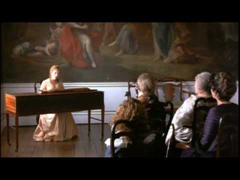
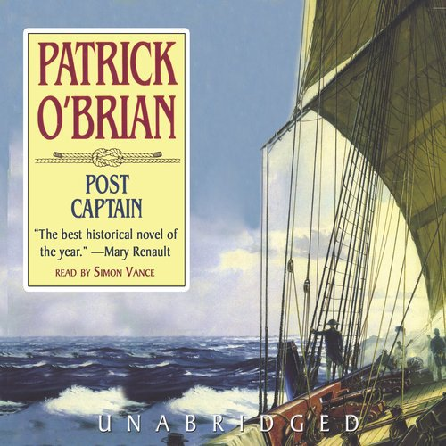
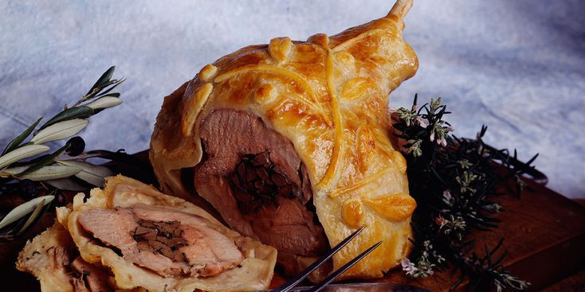
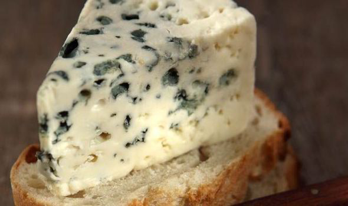
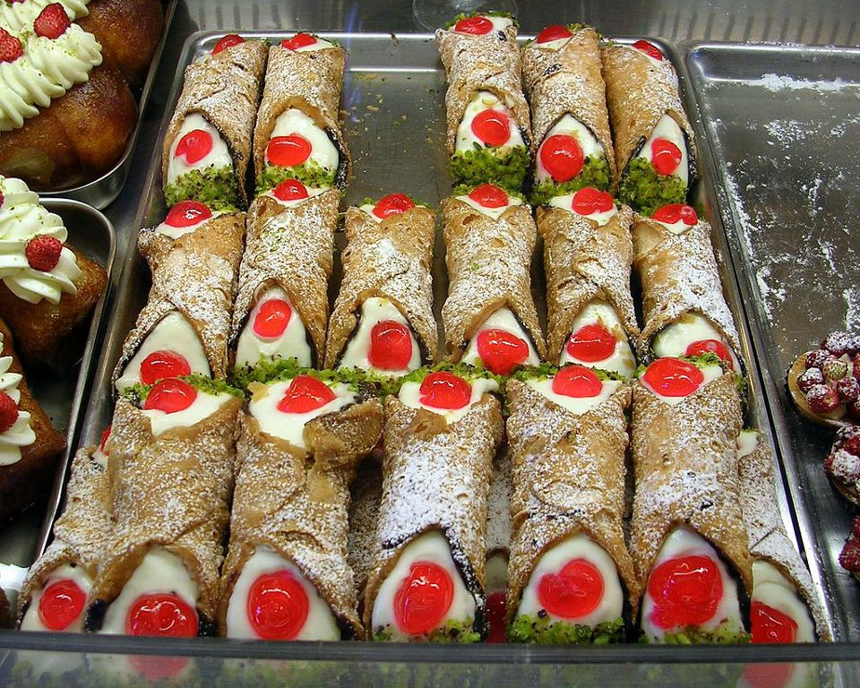
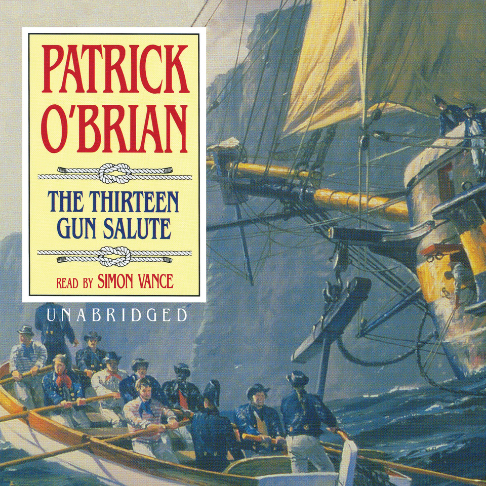
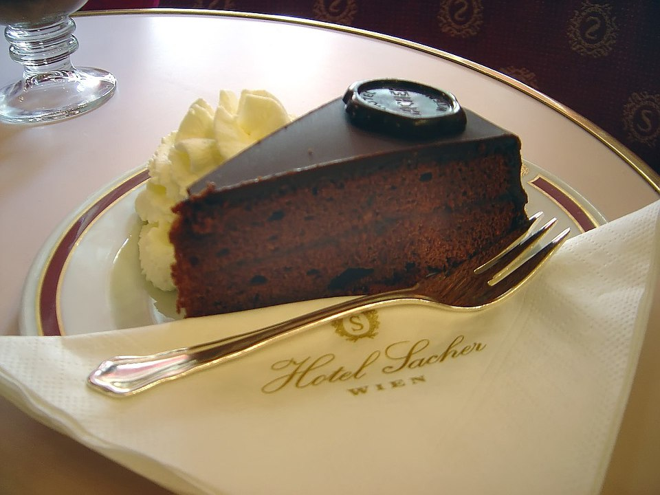
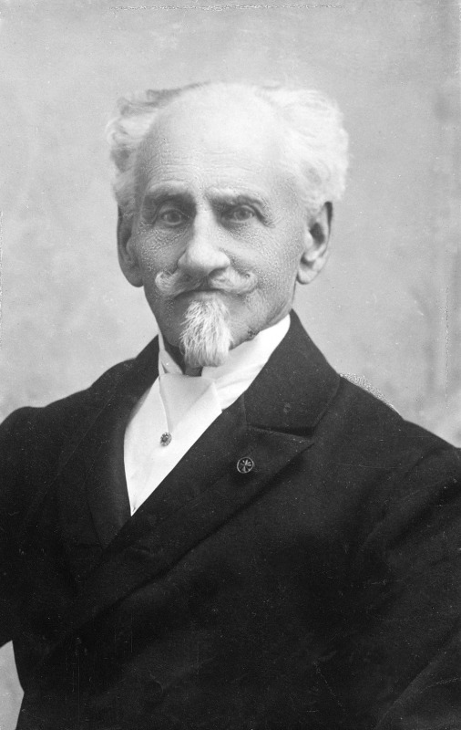
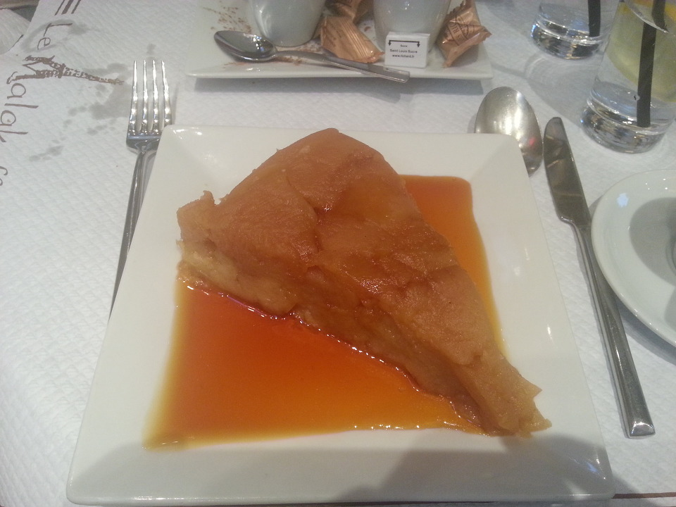
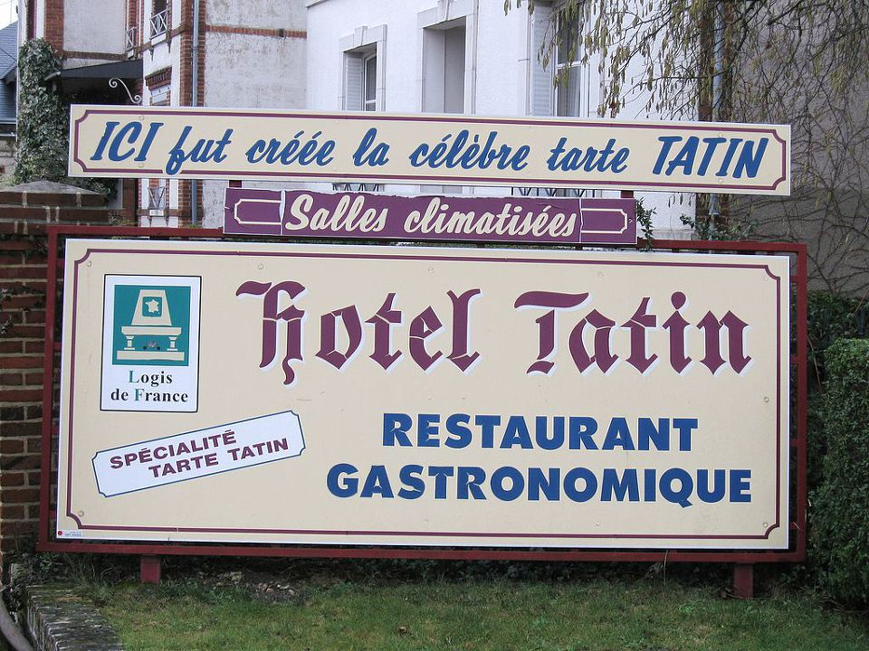

나폴레옹의 식탁 - 나폴레옹 시대의 식도락 이야기
게시: 2018-07-12T06:30:00+09:00
여러분이 나폴레옹 시대로 타임 워프를 한다고 하면 재미있을 것 같습니까 ? 재미는 있을지 몰라도 저를 포함한 대부분의 사람들은 당장 생활 편의품의 부족 때문에 몹시 불편할 것입니다. 냉장고나 에어컨, 수세식 화장실과 형광등 따위가 없기 때문이지요. 그런 것 말고도 당장 여러분들은 TV와 인터넷이 없어서 무척이나 심심할 것입니다. 그런데 그 부분은 여러분과 나폴레옹 시대 사람들이 함께 공유하는 부분입니다. 즉, 심심하다는 것이지요. 물론 그건 귀족이나 상류층 이야기입니다. 일반 서민들이야 먹고 살기 바빠서 심심하다는 사치스러운 생각을 할 틈이 없었지요.
그렇게 오락거리가 없는 시절에 인간이 탐할 수 있는 가장 일반적이고 말초적인 쾌락이 무엇이겠습니까 ? 당연히 식사입니다. (다른 걸 생각하신 분들은 반성하세요.) 하루의 일과에서 식사가 차지하는 비중은 매우 컸습니다. 당시 귀족들은 공직이나 군에 종사하지 않는 이상 원래 직업을 가지지 않았으므로, 그들의 하루 일과를 보면 정말 한가롭기 짝이 없었는데, 그런 무료한 일상을 달래주는 가장 큰 행사가 바로 오찬이었습니다. 친구나 이웃을 손님으로 모셔 놓고 멋진 식사를 대접하면서 환담을 나누고, 이후에 여흥으로 악기 연주나 노래를 듣는 것이 큰 즐거움이었지요. 그러니 당시 귀족들 및 부르조아 계급 사람들에게 피아노나 바이올린 등 악기 다루는 것을 배우는 것이 무척이나 중요했던 것입니다. 서로에 대한 엔터테인먼트 역할도 했고, 또 그러면서 인맥을 쌓는 것이 더더욱 중요했거든요.

(사진은 Sense & Sensibility 중의 한 장면입니다. 따지고 보면 요즘에는 저런 피아노나 바이올린 연주 배우는 것이 전혀 중요하지 않은데 말입니다...)
물론 이건 귀족 층의 이야기였고, 서민들은 말라비틀어진 빵이건 감자건 그저 배만 채울 수 있어도 감지덕지였습니다. 요즘에는 아주 많지만 당시에는 전혀 없었던 것 중의 하나가 바로 음식물 쓰레기입니다. 음식을 버리다니, 그건 상상도 할 수 없는 일이었습니다. 당시엔 먹을 것이 부족하여 굶어 죽는 사람도 많았으니 당연히 남는 음식물 없이 찌꺼기까지 다 먹었습니다. 귀족들은 물론 그러지 않았습니다만, 귀족들 집에 있는 하인들은 당연히 귀족들이 먹다 남긴 음식을 반갑게 잘 먹었습니다. 그러고도 남는 것들, 가령 감자 껍질이나 양배추 대가리 등은 (가난한 사람들은 직접 먹었고) 살림이 괜찮은 집에서도 집에서 키우는 돼지나 토끼 등이 다 먹어 치웠습니다. 피노키오 원작을 보면, 피노키오는 만들어지자 마자 배가 고프다고 찡얼대는데, 가난했던 제페토 할아버지는 피노키오에게 배를 하나 주지요. 피노키오가 과육만 먹자, 할아버지는 '껍질과 씨도 먹어야지' 라고 권하고, 미식가였던 피노키오는 처음엔 그를 거부하다가, 배가 고픈데 더 먹을 것이 없자 정말 배 껍질과 씨까지 먹어치우는 장면이 나옵니다. 예나 지금이나, 서민들의 삶은 팍팍한 것이니까요.
Le Moribund, 모파상 작 (배경 : 19세기 중반) ------------------------------
(늙은 시골 농부가 점심을 먹습니다.)
그는 방을 나와 부엌으로 돌아가, 찬장을 열고 6파운드 짜리 빵을 꺼내 한 조각을 잘랐다. 그는 빵부스러기를 조심스레 긁어모아 손바닥에 올리고는 한조각도 흘리지 않고 입 안에 털어넣었다. 그리고는 그의 칼 끝으로 토기 단지 속에 든 소금친 버터를 조금 긁어내 빵에 바르고는 천천히 먹기 시작했다.
-----------------------------------------------------------
이런 농부들과는 달리 귀족들은, 그리고 그 뒤를 이은 중산층의 고상한 신사 양반들은 체면 때문에라도 좋은 음식을 먹어야 했습니다. 특히 손님이 있을 때는 약간 무리를 해서라도 화려한 요리를 차려내야 했습니다. 그 결과, 귀족들까지는 몰라도 중산층 신사들의 엥겔 계수, 즉 생활비에서 식비가 차지하는 비중은 상당히 높은 편이었습니다. 나폴레옹 시대에서 약 20년 정도 지난 시대의 이야기인 레미제라블 속에서의 마리우스도 출판 일을 하며 가난한 생활을 할 때 버는 돈 700 프랑의 반이 넘는 액수인 400 프랑을 먹는데 써야 했지요. 엥겔지수가 너무 높은 것 아니냐고요 ? 당당한 중산층이라고 할 수 있는 당시 유럽 장교들도 급료의 절반을 장교 식당의 식대로 공제당하는 것은 상식 중의 상식이었습니다. 소위 같은 사람들은 급료보다 장교 식당 식대가 더 나갔기 때문에, 군대에서 돈을 받는 것이 아니라 군대에 돈을 내고 군 복무를 해야 했지요.
Sharpe's Waterloo by Bernard Cornwell (배경 : 1815년 벨기에 ) -------------------------
(네덜란드 왕자 밑에서 중령으로 복무 중인 샤프가 왕자의 임시 지휘소로 쓰이고 있는 여관에서 식사를 하며 왕자의 정부인 폴레트와 이야기를 하고 있습니다.)
"그러니까 중령님은 그저 돈 때문에 싸우는 거군요." 폴레트는 마치 그것이 모든 것을 설명해 준다는 듯 영악하게 말했다. "왕자님이 중령 노릇하는 것에 대해 얼마나 지불해주세요 ?"
"일당이 1 파운드, 3 실링 하고도 10 펜스지." 그것이 그가 기병 연대의 임시 중령으로서 받는 급료였는데, 이는 그가 일생 동안 벌어 본 것 중 가장 높은 금액이었다. 이 중 절반은 장교 식당의 식대 및 사령부 하인들 급료로 공제되어 없어졌지만, 그래도 샤프는 자신이 부자라고 느꼈다. 그가 영국군의 무보직 (half-pay) 중위로서 받는 일당 2 실링 9 펜스보다 훨씬 많았기 때문이었다.
-----------------------------------------------------------
아무리 유럽인들의 주식이 곡류가 아닌 육류라고 해도, 왜 이렇게 식비가 많이 들어갔을까요 ? 그냥 자기 식구들끼리 일상적으로 먹을 때야 그렇게까지 비싸게 들지 않았겠습니다만, 손님이나 친구들을 초대할 때는 이야기가 달랐습니다. 자신이 베푸는 식사는 자신의 체면을 뜻하는 것이었거든요. 요즘 사람들이 괜히 수입 중형차를 타고, 또 괜히 이탈리아제 가죽 가방을 터무니 없는 가격에 사서 들고다니는 것과 비슷한 것이었지요. 특히 당시에는 아직 그럴싸한 고급 식당이라는 것이 별로 없었으므로, 대개의 경우 자신의 집에서 자신의 요리사가 만든 요리를 대접해야 했는데, 그러자니 음식 자체에 특히 신경을 많이 써서 체면 상하는 일이 없도록 해야 했습니다. 따라서 귀족 집주인이 (우리들의 상식과는 좀 거리가 있는데) 음식의 종류나 조리법, 맛에 대해 세밀하게 신경을 쓰는 경우가 많았습니다.

Post Captain by Patrick O'Brian (배경 : 1803년 프랑스) ------------------------
"오찬을 들어야지." 크리스티-팔리에르 함장이 사형 집행 서류철의 F부터 L까지의 항목을 덮으며 말했다. "시작은 바니율스 (Banyuls, 유명 포도주 산지 이름) 한잔과 함께 앤초비하고 올리브, 그러니까 검은 올리브를 곁들여 들도록 하지. 그러고 난 다음에 에베르(Hébert)의 생선 수프를 들고, 이어서 쿠르부이용(courtbouillon) 소스를 얹은 간단한 랍스터(langouste)를 먹을 거야. 어쩌면 빵가루를 덮은 양다리 구이(gigot en croüte)를 먹을지도 모르겠는데. 사향초 (thyme) 허브가 꽃이 필 계절이라서 양고기 맛이 아주 좋을 때거든. 그 뒤에는 그냥 치즈와 딸기, 그리고 커피만 조금 들도록 하지. 물론 내 영국산 잼도 한접시 함께 해야지. 팡외, 자네 식의 든든한 식사는 하지 않을걸세. 이렇게 더운 날에는 내 간이 그런 거창한 식사를 견디지 못하거든. 게다가 아니발 (Annibale) 호가 다음주까지 바다에 나가려면 할 일이 엄청나게 많으니까."
-----------------------------------------------------------

(지고 앙 끄루트(Gigot en croûte)는 글자 그대로 빵가루를 입힌 넓적다리 구이 요리입니다.)
하지만 정작 당대 유럽 최고의 권력자였던 나폴레옹 본인은 무척 간소한 음식을 즐겼습니다. 나폴레옹의 시종(valet)들 중 하나였던 생드니(Louis Étienne Saint-Denis)에 따르면, 나폴레옹의 아침식사는 정말 간소했습니다. 당연히 황제의 요리사들은 훨씬 우아하고 정교한 요리를 내놓을 수 있었지만 그는 그냥 뜨거운 수프와 삶은 쇠고기 한조각을 더 선호했답니다. 때로는 달걀, 양고기, 커틀릿, 양고기나 닭고기와 함께 렌틸콩과 콩을 넣은 샐러드 등을 아침으로 먹기도 했고요. 하지만 먼저 먹는 수프를 빼면 아침에 먹는 요리가 2가지를 넘은 적은 없었답니다.
그런 나폴레옹조차도 저녁은 부하들이나 다른 궁정 식구들과 함께 먹었으므로 그들을 위해서라도 좀더 풍성한 저녁 식탁을 차리도록 했습니다. 친구들 초대해놓고 닭가슴살과 샐러드, 물만 내놓았다는 호날두와는 달랐던 것이지요. 그러나 그런 저녁 식탁에서도, 나폴레옹 본인은 굽든지 삶든지 해서 아주 간소하게 요리된 고기와 채소 한 접시씩만을 먹었습니다. 채소라고 해봐야 콩이나 감자 같은 것이었는데, 나폴레옹은 감자를 특히 좋아해서 굽든 삶든 감자라면 다 잘 먹었답니다. 그래도 프랑스인답게 식사의 마무리는 치즈 한조각을 먹었는데, 주로 로크포르(Roquefort) 또는 파머잔(Parmesan) 치즈를 택했습니다. 가끔은 과일도 먹었는데, 과일은 그다지 좋아하지 않았는지 사과나 배 1/4 조각 정도만 먹거나 포도 약간을 먹었답니다.

(로크포르 치즈입니다. 파머잔도 꽤 짜지만 저것도 상당히 짠 치즈인데... 하긴 대부분 치즈가 다 짜지요.)
나폴레옹도 좋아하는 디저트가 있긴 했는데, 아몬드였답니다. 보통 한 접시를 거의 다 혼자서 비웠다고 하네요. 또 둥글게 말아 크림을 넣은 와플도 좋아했습니다. 이건 설명을 들어보면 이탈리아 시실리 섬의 대표적 간식인 카놀리(Cannoli)가 아닌가 합니다. 또 당시 신사들이 흔히 하듯 코냑 같은 독한 증류주를 마지막 입가심으로 마시지 않고 그냥 커피를 마셨는데 다 마시지 않고 남겼다고 합니다.

(나폴레옹이 좋아했다는 둥글게 말아 크림을 넣은 와플이란 바로 이 카놀리(Cannoli)가 아닌가 합니다. 저 겉면을 이루는 과자는 사실 와플처럼 구운 것이라기보다는 도우넛처럼 튀긴 것이라고 합니다. 속에 든 크림에는 보통 리코타 치즈도 들어갑니다. 크기는 손가락 정도입니다.)
하지만 이런 손님이나 친구들을 초대한 식사에서 음식이나 은식기 못지 않게 중요한 것이 또 있었습니다. 바로 식탁에서의 흥미진진하고 유쾌한 환담이었습니다.

The Thirteen Gun Salute by Patrick O'Brian (배경 : 1813년 대서양의 영국 군함 HMS Diane 함상) -----------
그들은 서로를 쳐다 보고는, 마틴이 말을 이었다. "불쌍한 친구 같으니, 난 그가 이 배에서 미움살 짓을 이미 많이 한 것 같네. 이 친구가 옥스포드에서 전혀 그렇지 않았는데. 내 생각엔 대학 졸업 이후의 고독과 그 지긋지긋한 교사 생활 때문에 이렇게 된 것 같네."
"어떤 사람들에겐 그건 독약과도 같지. 성인들의 무리에 어울리지 않는 사람으로 만들거든."
"그게 그 친구가 느낀 거야. 스스로도 자기가 더 이상 어울리기 괜찮은 사람이 아닌 것으로 여기더라니까. 그 친구 유머 모음집 (jest book)도 한 권 샀더라고. <내 야심은 식탁을 아주 뒤집어 놓는 거야> 라고 말하더군."
-----------------------------------------------------------
물론 저 위에서 <식탁을 뒤집어 놓는 것>이라는 건 물리적으로 밥상을 뒤엎어 버리겠다는 것이 아닙니다. 다른 장교들과의 오찬 시간에 뭔가 기발한 농담을 해서 사람들의 배꼽을 빼놓겠다는 뜻입니다. 당시 오찬 (dinner)는 무척이나 중요한 일간 행사였고, 거기 참석하는 사람들 (사실상 모든 사람들)은 단순히 한끼 때우는 것이 아닌, (좋든 싫든) 다른 사람들과 교류를 나눠야 하는 중요한 자리였습니다. 예나 지금이나, 그런 자리에서 가장 인기가 좋은 사람은 잘생긴 사람이 아니라 유머 감각이 풍부한 사람입니다. 웃는 것을 좋아하지 않는 사람은 없거든요. 프랑스 사람들은 식탁에서 사회 문제나 철학, 뉴스거리 등에 대해 진지한 토론을 나누는 것을 좋아한다지만, 영국인들은 식탁에서 정치 이야기나 진지한 이야기를 나누는 것은 매우 부적절하다고 생각했습니다. 특히 위 소설에서처럼 같은 군함에 타고 있는 동료 장교들끼리, 갑판 위에서의 일, 즉 업무 수행 중에 벌어졌던 심각한 이야기나 언짢았던 일을 식사 중에 꺼내는 것은 금기시 되는 것이었습니다. 그러다보니 영국인들이 식탁에서 꺼내기 제일 좋았던 것은 뭔가 다들 웃을 만한 농담거리였고, 평소에 다들 뭔가 재미있는 농담거리 없을까 하고 소재를 찾았습니다. 정 소재거리가 없는 사람들을 위해서는 저렇게 유머 모음집까지 나왔던 것이고요.
자신이 베푸는 오찬에서 손님들이 맛있게 먹고 마시는 것은 물론이고, 손님들 중 누군가 빵빵 터지는 유머 감각을 발휘해주도록 주인이 기원하는 것은 당연한 것이었습니다. 또, 게스트가 제대로 터뜨리려면 유재석 같은 사람이 MC를 봐야 하듯이, 손님들이 유머 감각을 발휘하려면 주인이 이런저런 신경을 세심하게 써야 했습니다.
The Letter of Marque by Patrick O'Brian (배경 : 1813년 영국 런던) -------------------
(조셉 경이 자기 집에서 해군성 및 의회의 중요 인사들 8~9명을 초대하여 오찬을 베풉니다. 이 오찬의 중요 목적은 누명을 쓰고 해군에서 쫓겨난 잭 오브리 함장의 복직 운동을 위해, 잭 오브리를 이 중요 인사들에게 개인적으로 인사를 시키는 것입니다. 조셉 경은 하녀인 발로우 여사에게 이 오찬 준비를 시키는데, 자꾸 소소한 것까지 참견하며 혹시 준비 소홀이 없는지 전전긍긍합니다.)
하지만 조셉 경은 포크와 나이프 위치를 여기저기서 조금 변경한다든지, 요리 접시 위의 덮개가 미리 충분히 뜨겁게 덥혀져 있는지, 푸딩의 양은 충분한지 등등에 대해 안절부절 했다.
"오늘 오실 신사분들은 특별히 푸딩을 좋아한단 말이오. 판뮤어 경도 그렇고."
조셉 경의 잔소리가 이어질 수록 발로우 여사의 대답은 점점 짧아졌다. 결국엔 조셉 경이 이런 말까지 하게 되었다.
"이거 어쩌면 우리가 이 식탁 배치를 전부 바꿔야 할 지도 모르겠소. 그 신사분은 다리에 부상을 입었거든. 정말 그렇지. 서재에 있는 발 받침대 위에 다리를 쭉 펼 수 있으면 좋겠군. 그 신사분이 편안히 그렇게 하자면 그가 식탁 끝에 앉아야 할텐데... 그런데 어느 쪽 다리를 다쳤더라 ? 그리고 식탁의 어느 쪽 끝에 앉혀야 하지 ?"
발로우 여사는 속으로 중얼거렸다. "만약 5분만 더 이런 식으로 굴면 차려 놓은 요리를 모조리 창 밖 거리에 집어 던질 거야. 거북이 수프고 바다 가재고 반찬이고 푸딩이고 뭐고 모조리 다."
-----------------------------------------------------------
주인, 즉 호스트는 이렇게 음식 뿐만 아니라, 자신이 초대한 손님들이 최대한 편안하게 식사를 즐길 수 있도록 누구를 어디에 앉힐지, 식사 초대의 목적에 따라 어느 손님이 어느 손님 옆에 앉아야 하는지 또는 손님들 사이의 관계에 따라 어느 손님을 어느 자리에 앉혀야 할 지 등에 대해 세심하게 신경을 써야 했습니다. 호스트로서 가장 바라는 것은 모든 손님들이 디저트까지 싹 다 비울 정도로 음식을 즐기는 것은 물론, 식사 내내 손님들끼리 기분 좋은 농담으로 즐거운 시간을 보내는 것이었습니다. 그럴 경우 dinner가 "a great success"로 기억될 수 있었고, 그래야 손님들 뇌리에 "호스트 누구누구씨 = 기분 좋은 신사" 라는 것이 박히게 되었습니다. 만약 음식은 좋은데 함께 나온 와인이 신맛 나는 싸구려였다든가, 손님 중에 누가 완전 또라이라서 기분 나쁜 주제의 이야기만 계속 했다든가 하면 그 오찬은 완전 망하는 것이었지요.
저 위 소설 속에서 손님들이 푸딩을 좋아한다고 했지요 ? 푸딩이라고 하는 것이 특정한 한가지 형태의 음식을 말하는 것은 아닙니다. 일반적으로 영국 상류 사회에서는 디저트를 총칭하여 푸딩이라고 불렀기 때문에, 케이크 형태 또는 달콤한 죽 형태, 또는 삶은 떡 형태 등 다양한 형태의 요리가 푸딩으로 총칭되었습니다.
서양 식사 방법 중에 저 개인적으로 참 현명하다고 생각하는 것 중 하나가 바로 디저트입니다. 저처럼 먹는 것 좋아하는 사람은 당연히 케이크나 쿠키 같은 단 것도 좋아하는데, 그런 것을 많이 먹으면 당연히 살이 찔 수 밖에 없습니다. 그런데 그런 단 과자를 양껏 먹으면서도 조절하여 적당히 먹는 가장 좋은 방법은 바로 배가 부를 때 먹는 거쟎아요 ? 그런 면에서, 이미 식사를 든든히 한 이후에 디저트로 케익 등을 먹는 것은 참 현명한 음식 문화라고 생각됩니다. 그런 점에서 본 요리 못지 않게 중요한 것이 바로 푸딩 같은 디저트인데, 나폴레옹 시대에 특별히 유명해진 디저트는 불행히도 딱히 없는 것 같습니다.

(이것이 바로 자허 호텔에서 나오는 자허 토르테... 언젠가는 꼭 먹고 말아야G)
그러나 나폴레옹 시대 바로 직후에 매우 유명해진 디저트가 하나 있습니다. 바로 자허 토르테 (Sachertorte) 입니다. 이는 기본적으로 초콜렛 케익인데, 1832년 비엔나에서 프란츠 자허 (Franz Sacher)라는 요리사가 개발한 것입니다. 바로 나폴레옹을 집요하게 괴롭히고 또 결국 몰락시킨 오스트리아의 외교관이자 이후 근 20년 동안 유럽의 구시대 질서를 다시 공고히 지켰던 비엔나 체제의 장본인 메테르니히 (Wenzel von Metternich) 대공의 지시로 만들어졌다고 합니다. 1832년 어느날, 메테르니히 대공은 중요한 손님들을 모시고 오찬을 하게 되었는데, 하필 그날 그의 주방장이 몸이 아파 자리를 비우게 되었습니다. 결국 그날 디저트는 당시 16살 짜리 2년차 견습생이던 프란츠 자허가 맡게 되었는데, 메테르니히는 이 소년 요리 견습생을 불러다 놓고 '오늘 식사에서 내 얼굴에 먹칠을 하면 아주 경을 칠 줄 알아라'며 단단히 협박을 했다는군요. 본 요리는 어땠는지 모르겠으나, 이날 프란츠 자허가 만들어낸 초콜렛 케익은 손님들을 크게 만족시켜, 메테르니히도 기뻐했다고 합니다.

(프란츠 자허의 사진입니다. 메테르니히를 위해 케익을 굽던 소년이 이렇게 사진을 찍다니, 유럽의 기술 발전 속도를 보여주는 일입니다.)
나중에 프란츠 자허는 더 수련을 쌓고 여기저기서 주방장 생활을 한 뒤에, 결국 비엔나로 돌아와 식당을 열었고, 이 자허 토르테로 큰 성공을 거두었습니다. 그 덕분인지 그의 아들인 에두아르드 자허 (Eduard Sacher)는 비엔나에 아예 자허 호텔을 세웠고, 지금 비엔나의 명물이 되어 있습니다. 물론 오늘날 자허 호텔이 유명한 가장 큰 이유는 바로 원조 자허 토르테를 맛볼 수 있는 곳이기 때문이지요.
제가 전에 파리 여행을 하면서 먹은 음식들 중에는 맛있는 것도 있었고 맛없는 것도 있었는데, 우리 가족이 가장 기분 좋게 먹었던 식사는 파리 에펠탑 근처 강건너에 있는 사요 궁(Palais de Chaillot) 인근의 윌슨(Le Wilson)이라는 영어 이름의 카페에서였습니다. 생각해보면 그날 먹었던 음식이 뭐 딱히 그렇게까지 맛있었거나 특별했던 것도 아닌데, 왜 그렇게 기분이 좋았나 생각해보니, 바로 디저트 때문이었습니다. 그날이 파리에서의 2번째 날이었나 그랬거든요. 앵밸리드도 보고 에펠탑도 보고 기분도 좋아서 그날 저녁은 돈 걱정하지 말고 먹자라는 정신으로 디저트까지 다들 한 접시씩 시켜 먹었거든요.
그날 제가 시켰던 디저트는 불어로는 뭔지 모르겠고 (저희에게 준 메뉴판이 아예 영어로 되어 있었거나, 아니면 제가 영어로 된 부분만 읽었나 봅니다) 영어로는 apple pie upside down 뭐 그런 것이었습니다. 나온 파이를 보니 정말 파이 크러스트가 바닥에만 있고 위는 그냥 사과 범벅이 드러나 있더군요. 그 위에 발라 먹으라고 큼직막한 생크림 접시까지 하나 주던데요 ? 이렇게 단 것에 그렇게 느끼한 생크림까지 얹어 먹으면 정말 일찍 죽겠다 싶었는데, 먹어보니 위험한 만큼 정말 맛있더군요. 근데 결국 먹다먹다 배불러서 남긴 것은 에러였습니다.

(이것이 Le Wilson에서 시켜 먹은, 거꾸로 뒤집힌 애플 파이)
그런데 알고 보니 제가 골랐던 '거꾸로 뒤집힌 애플 파이'라는 것이 프랑스에서 꽤 유명한 디저트더군요. 저는 윌슨이라는 영어식 이름의 카페라서 미국스러운 애플 파이를 파나보다 싶었는데, 프랑스에서도 애플 파이는 흔한 디저트이고, 게다가 저 upside down 애플 파이는 프랑스에서 만들어진 유명한 음식이었습니다. 원래 디저트(dessert)라는 영어 단어의 어원이 desservir(de-service, 즉 서비스를 그만 하다, 식탁을 치우다) 라는 불어에서 나온 것이니까, 당연히 프랑스가 디저트도 더 유명하긴 하겠지요. 이 거꾸로 뒤집힌 애플 파이의 불어식 명칭은 tarte Tatin, 즉 타탱 타르트인데, 이는 파리에서 약 160 km 떨어진, 라모트-뵈브롱(Lamotte-Beuvron)이라는 동네의 타탱(Tatin)이라는 호텔에서 실수로 만들어졌다고 합니다. 원래 이 작은 호텔은 스테파니와 캐롤린이라는 예쁜 이름을 각각 가진 타탱(Tatin) 아주머니 자매가 운영하고 있었는데, 실수로 이렇게 거꾸로 뒤집힌 애플 파이를 만들어 내놓았다가 그것이 호평을 받으면서 이 호텔의 명물로 자리 잡았다고 합니다.

("ICI fut creee la celebre tarte TATIN 여기서 그 유명한 타탱 타르트가 창조되었습니다" 라는 타탱 호텔의 광고판입니다.)
그 실수가 어떤 실수였는지에 대해서는 몇가지 설이 있습니다만, 그게 중요한 것은 아니고, 재미있는 것은 지금도 이 호텔에서는 이 타탱 타르트를 간판으로 광고하고 있지만, 정작 타탱 아주머니 본인들은 한번도 자신들이 이 요상한 파이를 만들었다고 주장한 적이 없다는 것입니다. 저 타탱 타르트가 유명해진 것은 파리의 유명 레스토랑인 막심 (Maxim)의 주인인 보다블 (Louis Vaudable)이 이 타탱 호텔의 타르트에 얽힌 자신의 모험에 대해 크게 광고를 하면서 자신의 레스토랑에서 타탱 타르트를 팔았기 때문입니다. 이 보다블이라는 양반은 소싯적에 나이든 타탱 자매가 운영하던 타탱 호텔에서 이 타르트를 먹어보고 그 맛에 반해 이 요리법을 배우려고 했으나 거절당하자, 정원사로 위장 취업을 하여 결국 3일 만에 쫓겨나기 전에 그 요리 비법을 알아냈다고 주장했습니다.
하지만 보다블의 주장은 말짱 거짓말임이 분명하다고 합니다. 보다블은 1902년 생인데, 타탱 자매는 1906년에 이미 은퇴해서 1911년과 1917년에 각각 사망했거든요. 게다가 막심이라는 레스토랑이 보다블 집안에게 매각된 것은 1932년에 들어서의 일이라고 합니다. 그럼에도 불구하고, 타탱 타르트는 아직도 명성이 자자하여 이렇게 아무 것도 몰랐던 저같은 외국인 관광객조차 주문해 먹게 된 것을 보면, 사실 음식에 있어서 가장 중요한 것은 역시 맛일 뿐, 진실이나 정통성 따위는 전혀 중요하지 않은 것 같습니다.
Source : https://shannonselin.com/2015/07/what-did-napoleon-like-to-eat-and-drink/